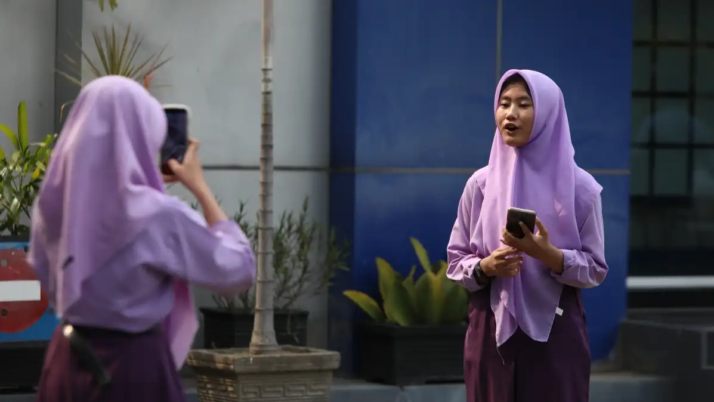
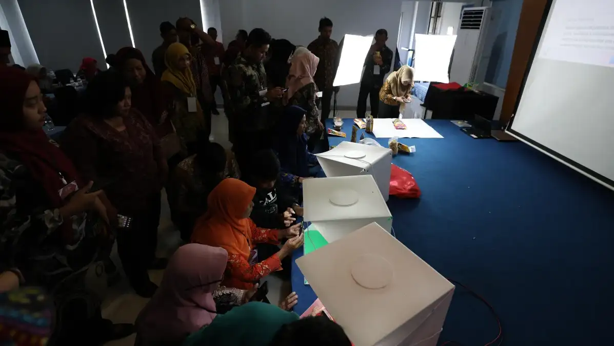
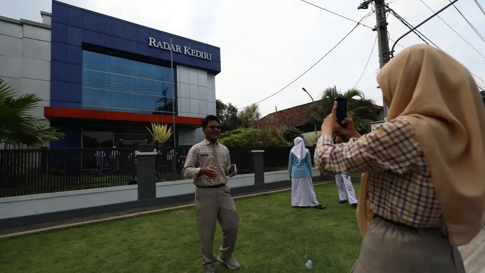

Pelatihan Fotografi Jurnalistik
Kuasai teknik memotret peristiwa dengan nilai berita yang tinggi dan belajar menyampaikan cerita utuh lewat gambar (visual storytelling) bersama pewarta foto profesional.

Menangkap Fakta dan Cerita di Balik Lensa
Sebuah foto jurnalistik yang kuat tidak butuh caption panjang untuk menjelaskan apa yang sedang terjadi. Program ini melatih insting visual Anda untuk mengenali 'decisive moment' — momen puncak yang sarat makna, emosi, dan fakta berita dalam hitungan sepersekian detik.




Detail Program
- Kategori Jurnalistik & Multimedia
- Format Teori, Hunting, Bedah Karya
- Durasi 2 Hari (Bisa Disesuaikan)
- Peserta Humas, Pers Kampus, Fotografer
- Instruktur Pewarta Foto JPRK Terverifikasi
- Persyaratan Membawa Kamera / HP Pro
- Sertifikat Ya, dari RK Institute
Tentang Program Ini
Dalam dunia komunikasi publik, foto yang bagus secara teknis belum tentu bermakna. Sebaliknya, foto dengan nilai jurnalistik tinggi adalah foto yang mampu memindahkan audiens ke lokasi kejadian dan memberikan pemahaman yang utuh mengenai suatu peristiwa.
Pelatihan ini dipandu langsung oleh jajaran pewarta foto senior Jawa Pos Radar Kediri. Anda akan diajarkan cara berpikir seperti seorang jurnalis visual — mulai dari merencanakan peliputan, memprediksi momen (anticipation), menempatkan diri pada sudut pandang terbaik (angle), hingga mematuhi batasan etika dalam mengolah (editing) gambar dokumenter.
Materi yang Dipelajari
Dasar Fotografi & Penguasaan Alat
Penyegaran materi teknis penguasaan Segitiga Eksposur (ISO, Aperture, Shutter Speed) serta pemahaman fungsi lensa agar peserta dapat merespons situasi lapangan yang dinamis dan minim cahaya dengan cepat.
Penerapan Rumus EDFAT
Belajar teknik dasar pengambilan gambar jurnalistik menggunakan metode EDFAT (Entire, Detail, Frame, Angle, Time) untuk memastikan liputan foto kaya akan variasi gambar dan informasi.
Menyusun Photo Essay
Teknik merangkai beberapa foto tunggal menjadi sebuah rangkaian cerita yang bermakna (Esai Foto). Peserta diajak berlatih menentukan foto pembuka (lead), isi (body), hingga penutup (tail).
Etika Foto Jurnalistik & Editing
Memahami batasan tegas antara memperbaiki kualitas gambar (cropping, koreksi warna dasar) dan memanipulasi fakta (menambah/menghapus objek). Termasuk etika dalam memotret subjek rentan (korban bencana/anak).
Penulisan Caption Berita
Foto jurnalistik tidak lengkap tanpa keterangan (caption) yang akurat. Berlatih menulis caption berstandar jurnalistik yang memuat prinsip 5W+1H untuk melengkapi konteks visual yang disajikan.
Dokumentasi Lapangan
Aktivitas peserta saat menaklukkan tantangan fotografi jurnalistik di bawah bimbingan instruktur